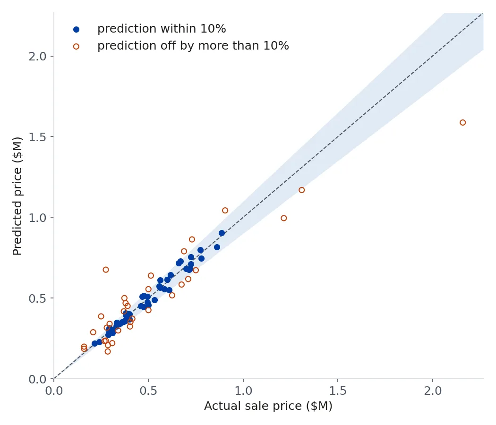
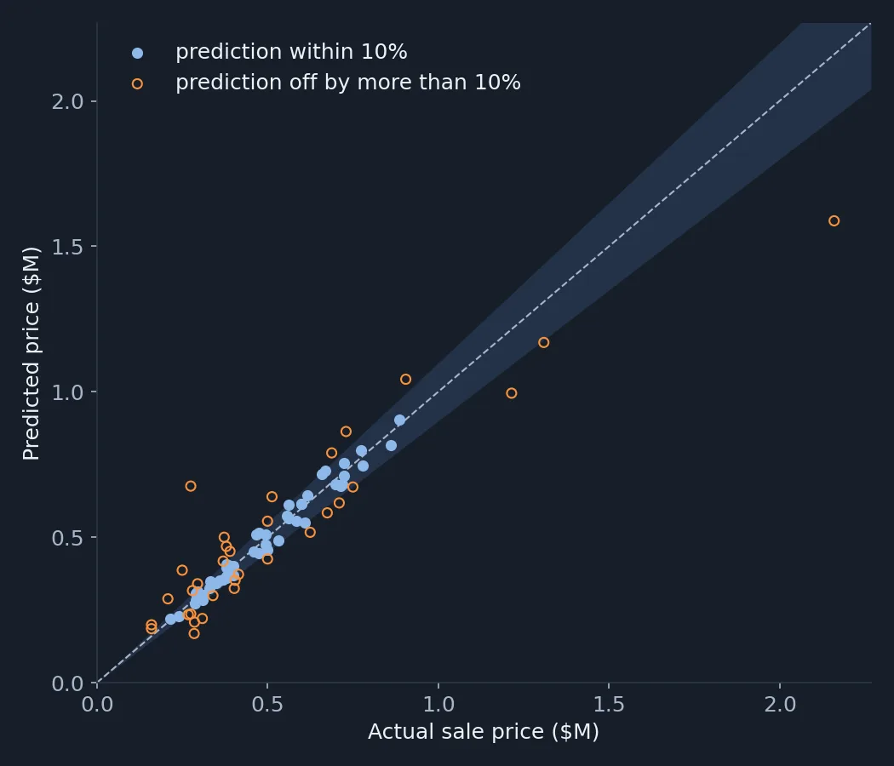

Location drives price. Most of our work went into giving an XGBoost model a sense of place, then checking it honestly on homes it had never seen.
- R²
- 0.8787on the 81-home mini holdout
- Median abs. error
- $36,617half of predictions were closer than this
- Within 20%
- 86.4%of predictions, relative to sale price
- Training sales
- 20,000across 70 zip codes
The problem
The task: given a home’s size, condition, grade, age and location, predict its sale price in King County, Washington, which includes Seattle. Prices are heavily skewed. The median is $450,000, but the top sale is $7.7 million, so a few mansions can dominate a squared-error loss. The course graded submissions on an 81-home mini holdout using RMSE, mean and median absolute error, R² and the share of predictions within 5%, 10% and 20% of the true price.
The data
The training set has 20,000 sales from May 2014 to May 2015, with 21 columns and no missing values. Each sale lists bedrooms, bathrooms, living and lot square footage, floors, waterfront and view ratings, condition and grade, year built and renovated, zip code, latitude and longitude, and the living and lot size of the 15 nearest neighbors.
Before modeling, we built an interactive exploration dashboard with a zip-code price map, correlation matrix, feature distributions and outlier flags. It surfaced issues such as a 33-bedroom listing.
Open the interactive housing dashboard Our exploratory dashboard: zip-code price map, correlations, distributions and outlier flags for the 20,000 training sales.Our approach
Location drives price, so most of the feature work went there. We clustered latitude and longitude into 20 k-means regions and gave each home its distance to every cluster center. We also added a nearest-neighbor price feature: the typical price of the 10 closest homes, computed out-of-fold with 5-fold splits so a home never sees its own price.
Zip codes were one-hot encoded, sale dates became days since the start of the data, and features were standardized. The model is an XGBoost regressor (800 trees, depth 6, learning rate 0.05) trained on log price. We converted predictions back to dollars with Duan’s smearing correction for log-transform bias. We trained across five random seeds with 5% validation splits; the scores printed but were not saved, so only the final seed’s predictions are reported.
Results
On the 81-home mini holdout, the model explained about 88% of the variance in sale price. Half of its predictions were within $36,617 of the true price, and 86.4% were within 20%.
RMSE is much higher than the median error because of a few large misses, mostly expensive homes priced too low; the highest sale in the holdout, about $2.2 million, was priced near $1.6 million. With only 81 homes, these figures will shift on a different sample.
| Metric | Value |
|---|---|
| RMSE | $99,567.51 |
| Mean absolute error | $58,233.27 |
| Median absolute error | $36,617.10 |
| R² | 0.8787 |
| Within 5% / 10% / 20% | 35.8% / 59.3% / 86.4% |


What we learned
We put our effort into feature engineering rather than tuning: distance-to-cluster features and an out-of-fold neighborhood price give the model a sense of place beyond raw coordinates and zip codes. (We did not run an ablation to measure their contribution.) Training on log price kept the expensive tail from dominating, but it does not eliminate that tail: the largest misses were mostly high-end homes, plus one $275k home priced at $676k.
The out-of-fold construction was the detail that mattered most. A nearest-neighbor price built naively would leak each home’s own price into its features and make validation look better than it really is. Next time we would log validation scores for every seed and try a separate model for the luxury segment.
Team, tools and code
Team NorthWind
- Caleb Dilley
- Dallin Wagner
- Jonathan Oliphant
- Nels Buhrley
A team project for CSE 450 Machine Learning at BYU-Idaho, Spring 2026.
Source: Source on GitHub · Team project site